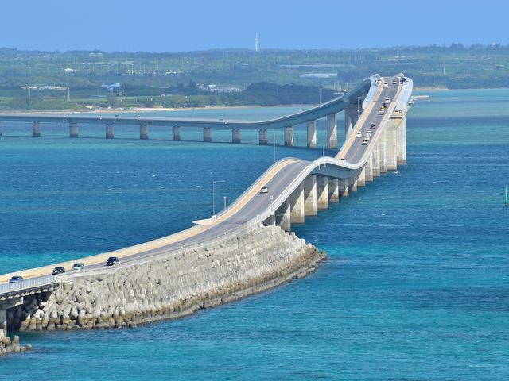
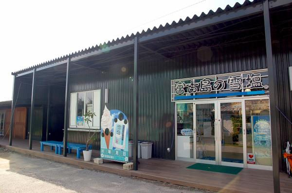
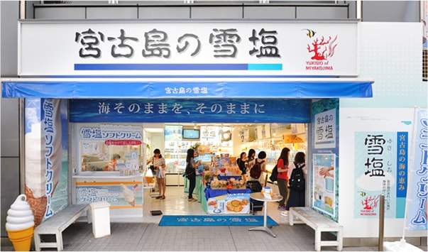
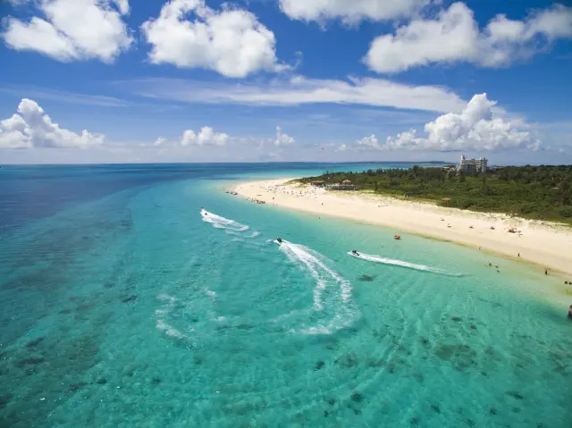
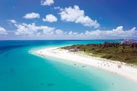
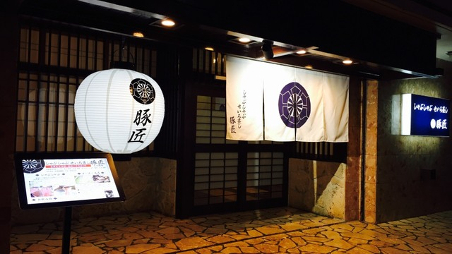
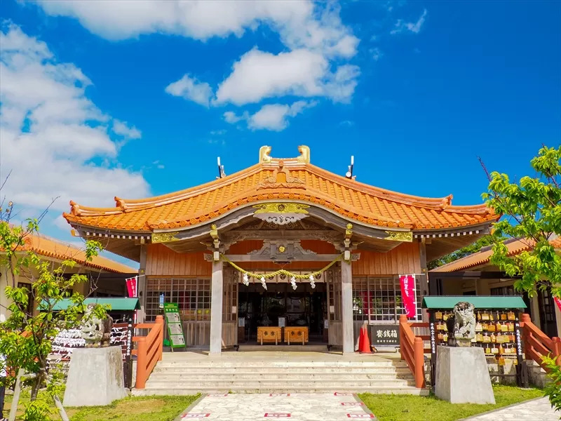
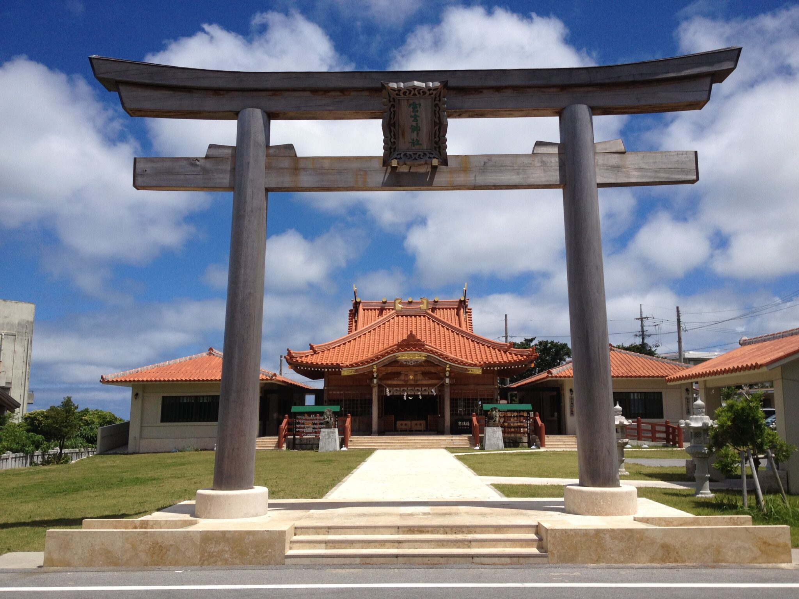
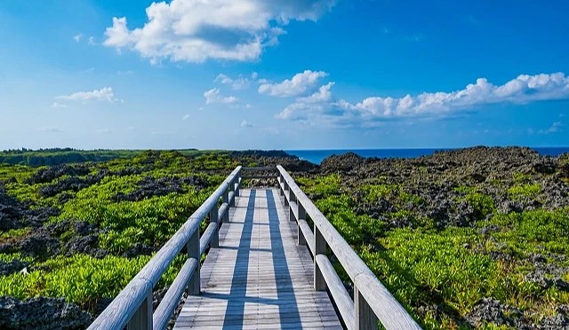
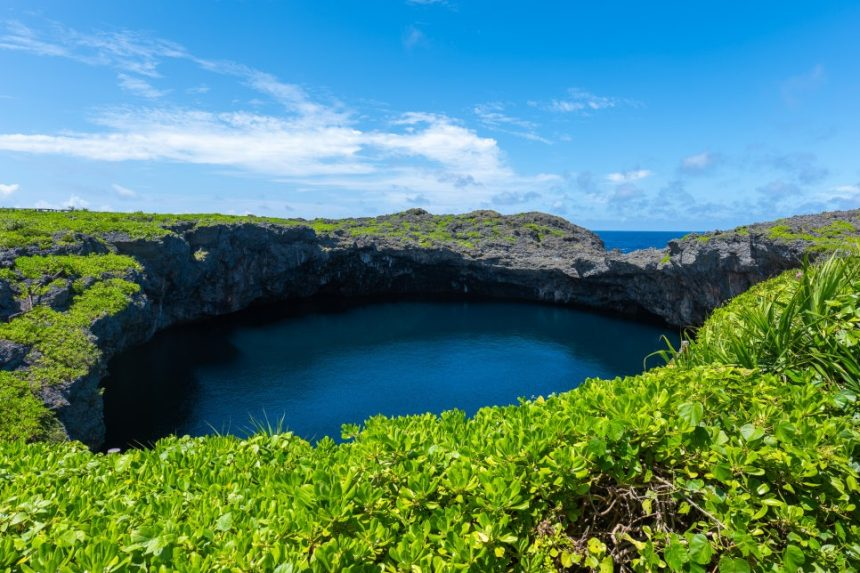

Day 1｜宮古島（完整行程）
📍 最佳動線（依 08:00 靠岸）
➡ 宮古港 → 伊良部大橋 → 雪鹽博物館 → 與那霸前濱海灘 → 午餐（豚匠） → 通池展望台（可選） → 港口
🚩 景點 1：伊良部大橋
伊良部大橋於 2015 年啟用，是日本最長的免費跨海大橋之一，象徵宮古群島的交通發展。


🕒 建議停留：20–30 分鐘
💰 票價：免費
🚗 車程：宮古港 → 約 15 分鐘
🌧 雨天備案： AEON 宮古店（室內、椅子多、餐廳充足）
🚩 景點 2：雪鹽製鹽所（雪鹽博物館）
雪鹽以特殊低溫乾燥製法保留海洋礦物質，是宮古島代表性名產。


🕒 09:00–18:00
💰 票價：免費
🕒 建議停留：30–40 分鐘
🚗 車程：伊良部大橋 → 約 12 分鐘
🚩 景點 3：與那霸前濱海灘
被稱為「日本最美海灘」，沙質細緻、海色分層，被多次票選世界級美景。


🕒 建議停留：30–45 分鐘
💰 免費
🚗 車程：雪鹽博物館 → 約 15 分鐘
🌧 雨天備案： 宮古島海中公園、宮古島博物館（皆為半室內／室內）
🍽 午餐：豚匠 宮古島邸（阿古豬涮涮鍋）


🕒 建議用餐：60–75 分鐘
🚗 車程：前濱海灘 → 8 分鐘
⭐ 必吃：阿古豬涮涮鍋、三層肉、鹽味高湯鍋
若客滿 → 自動備用餐廳：
1. れすとらん ジャンジャン（免預約）
2. 丸吉食堂（宮古蕎麥麵）
3. ひろちゃん食堂（家庭料理）
1. れすとらん ジャンジャン（免預約）
2. 丸吉食堂（宮古蕎麥麵）
3. ひろちゃん食堂（家庭料理）
🚩 景點：宮古神社
宮古神社建於 1590 年，是宮古島歷史最悠久的神社，被視為島上精神文化象徵。
境內樹蔭涼爽、氛圍沉靜，是遊客體驗當地信仰與祈福的特色景點。


🕒 建議停留：15–25 分鐘
💰 免費
🚗 車程：豚匠 → 約 10 分鐘
🌧 雨天備案： AEON 宮古店（可休息、購物、伴手禮齊全）
⭐ 追加行程（體力夠再去）：通池展望台


🕒 停留 10–20 分鐘
🚗 車程：豚匠 → 10 分鐘